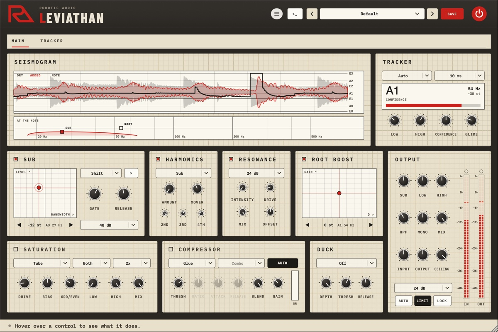
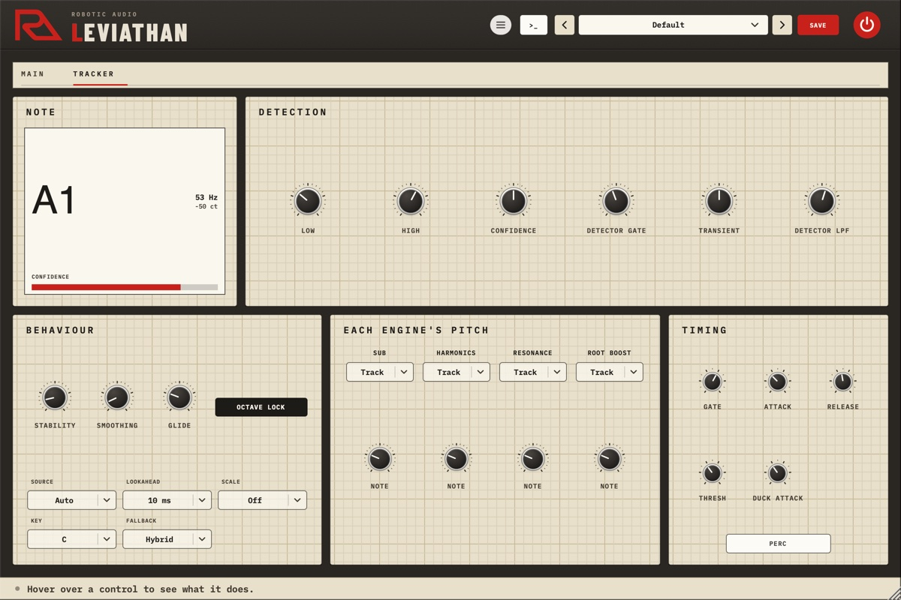

Leviathan
A bass processor that follows the note. It hears what your bass plays and builds a low end under it, always in tune: a sub an octave or two down, harmonics that small speakers can play, a resonant peak and an EQ band that move with every note. Then it shapes and pushes the result.
- Real-time pitch tracking, or MIDI
- 3 sub engines: Shift, Synth, Octaver
- Tracked harmonics, resonance and EQ
- 8 saturation types, 4 compressor modes
- Sidechain or MIDI duck
- Mono below, true-peak limiter, auto gain
- AU · VST3 · Standalone

Quick start
From a thin bass to a foundation.
First insert
Put Leviathan first on a bass track: a DI, a synth, an 808. It wants one note at a time.
Watch the note
Play the bass. The TRACKER card shows the note it hears, and the seismogram draws it as a line. If it jumps around, see the tracker.
Blend in the sub
Drag up in the SUB pad for more, sideways for how much of the bass's character it keeps. The arrows under it set the interval: −12 st is an octave down.
Pick an engine
Shift for real basses, Synth for the purest, heaviest sub, Octaver for grit.
Make it heard
Turn up Harmonics so the low end still reads on phones and laptops, and set HPF to keep the very bottom in check.
Try a preset
Deep Octave, 808 Glue, Phone Speaker, Reese Rumble and Replace the Bass show its range.
The window
Two pages under one header.
- Header
- The preset bar (previous, next, the list, SAVE), the power button (bypass) and the menu (three lines) with this manual. Click the title for version and credits. With an AI key, a >_ opens the designer. Until Leviathan is licensed, a DEMO or TRIAL chip opens the licence.
- MAIN
- The seismogram and the tracker on top; the engines Sub, Harmonics, Resonance and Root Boost; Saturation, Compressor and Duck; the Output down the right.
- TRACKER
- Everything about how the note is found, each engine's pitch, and the sub's and duck's timing.
The window can be resized from its bottom-right corner. Drag a knob up or down to change it (the value shows on it), Cmd-drag for fine steps, double-click to reset. The square in front of a card's title switches that card on and off.
Signal flow
The dry bass and what Leviathan adds, side by side.
The tracker hears the input as it arrives; the dry bass and the engines play Lookahead later, so they know each note's pitch as it starts. The dry bass passes Root Boost. Beside it, the generated bus (GEN) adds the sub, the harmonics and the resonance and ducks under the kick if you ask it to. Saturation drives the dry bass, the generated bus or both; then the two are summed and pass the compressor, the EQ, the HPF, Mono Below, the Mix with the untouched input, Output and the limiter. Leviathan costs nothing once its input is silent and everything has died away.
The seismogram
What Leviathan hears and adds, as it plays.
The upper chart scrolls the last two and a half seconds from right to left: the dry bass in faint grey, what Leviathan adds in red, and the tracked note as a black line against the scale of notes on the right (E0 to E3). Gaps in the line are moments with no clear note.
The strip below (AT THE NOTE) draws each engine on a frequency axis where it plays now: the sub's band in red, Root Boost's curve, the resonant peak, and ticks for the harmonics, over the output's spectrum. Three handles move with them:
- SUB
- Up and down for the sub's level, sideways for its bandwidth.
- ROOT
- Up and down for Root Boost's gain, sideways for its Q.
- RES
- Up and down for the resonance's intensity.
Double-click a handle to reset it.
The tracker
Finding the note, and what to do when it can't.

The tracker follows one note at a time: bass, 808s, kicks, mono synths, vocals. The TRACKER card on MAIN shows the note, its frequency, how far it is from the nearest semitone and a CONFIDENCE bar; the page of the same name holds the rest.
- Source
- Auto follows the audio. MIDI takes the note from MIDI notes instead (the newest key held): for chords, a bus, or a source the detector can't follow.
- Lookahead
- Off, 5, 10, 20 or 40 ms. The tracker needs a moment to hear a new note (about two cycles of it: a low E takes nearly 50 ms); lookahead gives it that moment before the note plays, at the cost of that much latency, which your host compensates. Off for live playing, 20–40 ms for fast lines and the lowest notes.
- Low · High
- The range of notes it looks for (20–200 Hz and 60–1000 Hz; 30 Hz and 400 Hz to start). Raise Low if it jumps down an octave, lower High if it mistakes harmonics for the note.
- Confidence
- How sure it must be before it follows. Higher falls back to the static notes more often; lower follows even unclear notes.
- Detector Gate
- Anything quieter than this is no note, so noise and bleed aren't tracked.
- Transient
- What the detector hears: left emphasises the attack, right the sustain, the middle leaves it alone.
- Detector LPF
- The detector hears the bass low-passed here, so it stays on the fundamental. Lower it for bright, distorted or FM basses.
- Stability
- How many estimates in a row must agree before a new note is taken (1–8): higher is steadier, slower.
- Smoothing
- Averages the pitch while a note holds (up to 100 ms). Less follows vibrato.
- Glide
- How long the engines take to slide to a new note (up to 200 ms).
- OCTAVE LOCK
- Ignores sudden jumps of an octave while the note being played still fits.
- Scale · Key
- Snaps the notes to a scale: Chromatic to the nearest semitone, or a Major or Minor key. Off for slides and bends.
- Fallback
- When the note is lost. Manual goes to each engine's static note at once, Hold keeps the last note, Hybrid holds it for a moment (150 ms) and then goes to the static note.
Each engine's pitch
Sub, Harmonics, Resonance and Root Boost each have Track (follow the note) or Static (stay on their own Note). The Note is also where an engine goes when the tracker has no note. Tune it to the song's key. A tracked sub with a static Root Boost or Resonance gives you fixed, classic bass EQ under a sub that follows.
Sub
The layer an octave or two under the bass.
- Pad
- Drag up for the Level (0 dB is as loud as the bass's own low end; at the bottom it's off), sideways for the Bandwidth: narrow keeps a pure sub, wide keeps more of the shifted bass. Under the pad, the arrows step the Interval (Shift-click for an octave) and name the note the sub plays.
- Engine
- Shift moves the bass itself down: it keeps the bass's character, the natural choice for real basses. Synth plays a clean oscillator at the sub's pitch: the heaviest, purest sub, for 808s and electronic music. Octaver divides the bass like an analog octave pedal: gritty and instant, needing no tracking (−12 or −24 only).
- S
- Solo: hear the sub alone while you hold it.
- Gate · Release
- Gate at 0 % holds each note's level (a steady sub); at 100 % the sub follows the bass's dynamics and decay. Release sets how quickly it fades when the note ends.
- Slope · Wave
- With Shift and Octaver, how steeply everything outside the band is cut (24–96 dB per octave). With Synth, its waveform: Sine is pure, Round warmer, Triangle and Soft Square add harmonics that help small speakers.
On the TRACKER page's TIMING card: Attack (how quickly the sub comes in on a new note: short is punchy, long swells), Thresh (below this the sub is silent, so only notes that matter get one) and PERC, for kicks and drums: each attack passes through as it was, for punch, before the shifted sub takes over.
Harmonics
So a sub is heard where it can't be played.
Small speakers can't reproduce a sub, but your ear fills in a fundamental from its harmonics. Harmonics adds the 2nd, 3rd and 4th harmonics of the low end, following the bass, only above a crossover so they bring audibility and not mud.
- Amount
- How loud the harmonics are.
- Xover
- The harmonics are added only above this (60–300 Hz).
- 2nd · 3rd · 4th
- The balance: the 2nd is warm and the strongest cue, the 3rd brings growl, the 4th definition on tiny speakers.
- Sub · Root
- Whose harmonics: the sub's pitch (with the sub on) or the bass's own note.
Resonance
A pushed analog filter, tuned to every note.
A driven, resonant low-pass filter at the note, in parallel with the dry bass, so it adds a singing peak without ever taking the bass over.
- Intensity
- From a subtle bump at the note to a severe peak. At 0 it's off.
- Drive
- Pushes the filter harder for growl.
- Mix
- How much of the filter is added.
- Offset
- Tunes the peak away from the note: +12 an octave up, +7 a fifth.
- 12 dB · 24 dB
- The filter's slope: 24 dB is darker and more pronounced.
Root Boost
An EQ band that follows the bass line.
A fixed EQ boost makes some notes boom and leaves others weak. Root Boost puts its band on each note's fundamental, so every note gets the same lift (or cut).
- Pad
- Drag up to boost and down to cut, up to 18 dB; sideways for the Q (0.1 broad to 10 narrow). The arrows move the band away from the fundamental: +12 st is the 2nd harmonic, +19 the 3rd.
Saturation, compressor, duck
Push it, glue it, and keep it out of the kick's way.
Saturation
- Type
- Tube rounds peaks warmly, Tape glues and compresses, Diode is gritty and uneven, Vintage console warmth that darkens as it's pushed, Crystal a clean, bright sheen, Fuzz hard and buzzy, Rectify an octave up, aggressive, Fold metallic wavefolding.
- Dry · Gen · Both
- What's driven: the dry bass, what Leviathan adds, or both together.
- 1x · 2x · 4x
- Oversampling: higher is cleaner on hard drive and costs more.
- Drive
- How hard (0–36 dB).
- Bias
- Skews the curve for even harmonics and a richer, asymmetric drive.
- Odd/Even
- Odd harmonics (edgy) to even harmonics (warm).
- Low · High
- Only what's between them is driven: set Low to 150–200 Hz to keep the sub clean while the mids grind. Full at either end drives everything.
- Mix
- How much of the driven sound.
Compressor
- Mode
- Glue (a VCA bus compressor), Punch (lets the attack through, then clamps: weight), Sustain (heavy, long sustain) or Custom, which unlocks Ratio, Attack, Release and the detector.
- Thresh
- How much it compresses: lower is more.
- Ratio · Attack · Release
- Custom: how hard, how fast it clamps, how fast it lets go.
- Detector
- Custom: Peak reacts at once, RMS to the average, Combo between.
- Blend
- Mixes the compressed sound with the uncompressed: parallel compression.
- AUTO · Gain
- AUTO makes up the level the compressor takes; Gain adds more (−12 to +24 dB). The GR meter shows how far it turns the sound down.
Duck
Ducks only what Leviathan adds, never the bass itself, so a new sub and the kick don't fight.
- Source
- Off, Sidechain (route the kick to Leviathan's sidechain input in your host) or MIDI (a note per kick: the added low end dips while a note is held, and for at least 30 ms).
- Depth
- How far it dips: 100 % all the way.
- Thresh
- The sidechain level that starts the duck; it's fully down 6 dB above it.
- Release
- How quickly it comes back. Duck Attack, how quickly it dips, is on the TRACKER page's TIMING card.
Output
Balance, clean up and level.
- Sub · Low · High
- A shelf under 60 Hz, a bell at 200 Hz (body, or mud) and a shelf over 2 kHz (bite and string noise), ±12 dB each.
- HPF
- Cuts the rumble below it (Off at the bottom of its range). A sub two octaves down can reach lower than any speaker plays: 20–35 Hz keeps it in check. The menu under the knobs sets its slope, 12 to 48 dB per octave.
- Mono
- Everything under this is mono, so the low end stays solid on every system (Off at the bottom).
- Mix
- The processed sound against the untouched input.
- Input · Output
- Levels in and out, ±24 dB.
- Ceiling · LIMIT
- A true-peak limiter on the output, and its ceiling.
- AUTO
- Play the bass and click: Leviathan measures four seconds and sets Output so it's as loud as it came in.
- LOCK
- Keeps Input and Output where they are when you load presets.
- IN · OUT
- The input and output meters.
Presets
Fourteen to start from.
Use the arrows to step through presets or click the name for the list; SAVE stores yours, and the menu has Save As, Delete and Open Folder. They range from Deep Octave, Double Down and DI Weight to 808 Glue, Phone Speaker, Reese Rumble, Kick Thump, Moog Drive, Root Focus, Replace the Bass, Ducked Sub, Vocal Thickener and Fifth Lead. With LOCK on, presets leave your Input and Output alone.
User presets are XML files in ~/Library/Audio/Presets/Robotic Audio/Leviathan (macOS) or Documents/Presets/Robotic Audio/Leviathan (Windows).
Designing with Claude
Describe a bass; Claude sets Leviathan to make it.
With your own Anthropic key, the >_ beside the presets opens a designer: describe what you want, such as "a clean sub for a fingerstyle DI bass" or "an aggressive, distorted reese with a sub that ducks under the kick", and Claude sets the tracker, the engines, the shaping and the output. NEW SOUND designs from scratch, EDIT THIS changes only what you ask for; REVERT puts it back, SAVE AS PRESET keeps it. The keys are your own (Menu > AI...), shared by every Robotic Audio plugin and kept on this computer; without one nothing of this shows. It needs a network connection and is part of the macOS and Windows plugins.
Licence
Try it, activate it, move it to another computer.
Without a licence, Leviathan runs as a demo: the sound drops out for 3 seconds every 45 seconds; everything else works, saving included. The header shows DEMO (or TRIAL with the days left); click it, or choose Licence... in the menu.
- ACTIVATE
- Opens the shop in your browser; Leviathan unlocks a few seconds after you choose your licence.
- START TRIAL
- Everything, free, for 14 days, once per computer.
- SAVE DEVICE FILE / LOAD LICENCE FILE
- For a computer without the internet.
- DEACTIVATE
- Frees this computer's seat for another one.
Recipes
Starting points.
Shift at −12, Level −6 dB, Bandwidth 30 %. Root Boost +4 dB, Q 1.2. Tube saturation on Dry, Punch compressor.
Synth, Round, Gate 100 % so the sub follows the 808's decay. HPF 25 Hz. Tape saturation on Both.
Harmonics 50–60 %, Xover 90 Hz, 3rd at 80 %. Pull EQ Sub down a few dB: the bass reads on small speakers without more lows.
Duck Source Sidechain with the kick routed in, Depth 100 %, Release 100–150 ms. Or MIDI, with a note on every kick.
Octaver at −12, Resonance 55 % with Drive, Fuzz saturation on Both with Low 200 Hz so the sub stays clean.
Shift at −12 with PERC on, Gate 100 %, Attack 0.5 ms, Release 60 ms: each kick keeps its click and gains a tail an octave down.
Sub on Track; Root Boost and Resonance on Static, their Notes on the song's root. Fixed tone shaping under a tracked sub.
Shift at +7, Bandwidth 80 %, Range Low 80 Hz, Detector LPF 1.5 kHz. A harmony that follows the melody.
Specifications
The facts.
| Type | Bass enhancer (effect plugin), stereo, with a sidechain input and MIDI in |
|---|---|
| Pitch | Real-time tracking of monophonic sources (20 Hz–1 kHz), or MIDI notes |
| Latency | The Lookahead (0, 5, 10, 20 or 40 ms) plus the limiter's 2.3 ms, reported to the host |
| Sub | Shift, Synth or Octaver; ±24 semitones; band slopes 24–96 dB per octave |
| Engines | Harmonics (2nd–4th), Resonance (12 or 24 dB), Root Boost (±18 dB, Q 0.1–10); each tracked or static |
| Shaping | 8 saturation types with 1×, 2× or 4× oversampling; compressor with 4 modes; sidechain or MIDI duck |
| Output | 3-band EQ, high-pass (12–48 dB), mono below, mix, true-peak limiter, auto gain |
| CPU | About 1 % of one core while playing; nothing once it's silent |
| Formats | AU, VST3 and Standalone (macOS); VST3 and Standalone (Windows, Linux) |